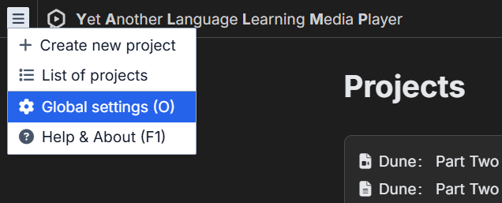
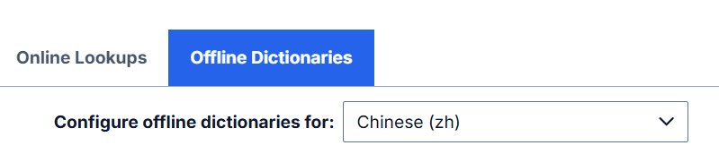
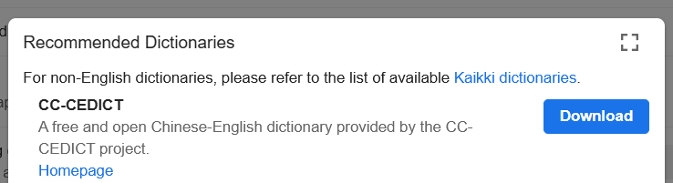
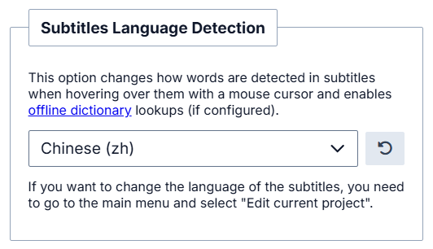
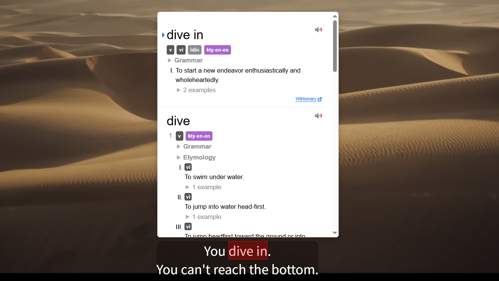

Dictionaries configuration
Yomitan is a browser extension that provides dictionary definitions in popup window when hovering over text.
-
Open Y'ALL Media Player and go to main menu -> "Global settings " (or press O keyboard shortcut).

- Go to the Offline Dictionaries tab.
-
Important: offline dictionaries are configured separately for each language. First, select your target language from the dropdown at the top of the page:

-
Once you select a language, the easiest way to add a dictionary for it is to click "Get recommended dictionaries..." and then "Download" next to one of the recommended dictionaries in the dialog window. You can install multiple dictionaries for a single language (if available), because some of them serve different purposes (e.g., there's a separate dictionary for kanji stroke order in Japanese). Wait several minutes for the selected dictionary to finish downloading and importing, then close the global settings dialog window.

- Alternatively, advanced users can also download dictionaries from sources like the Kaikki project and import them from a file using the "Configure installed and enabled dictionaries..." -> "Import" buttons. Dictionaries must be in Yomitan or Yomichan format. Legacy formats like EPWING etc. must first be converted using the official Yomitan importer.
-
Final step: open a project, go to the project settings (keyboard shortcut P) and ensure the correct language is set in the "Subtitles Language Detection" section. This connects your project to the dictionaries you've configured for that language. After that you can close the project specific settings panel.

-
That's it! You should now be able to hover over text in subtitles and see a popup with dictionary definition in it. For more information regarding advanced Yomitan configuration, visit the official Yomitan webpage.
Image source: "Dune: Part Two - Official Trailer" (Warner Bros. Pictures)